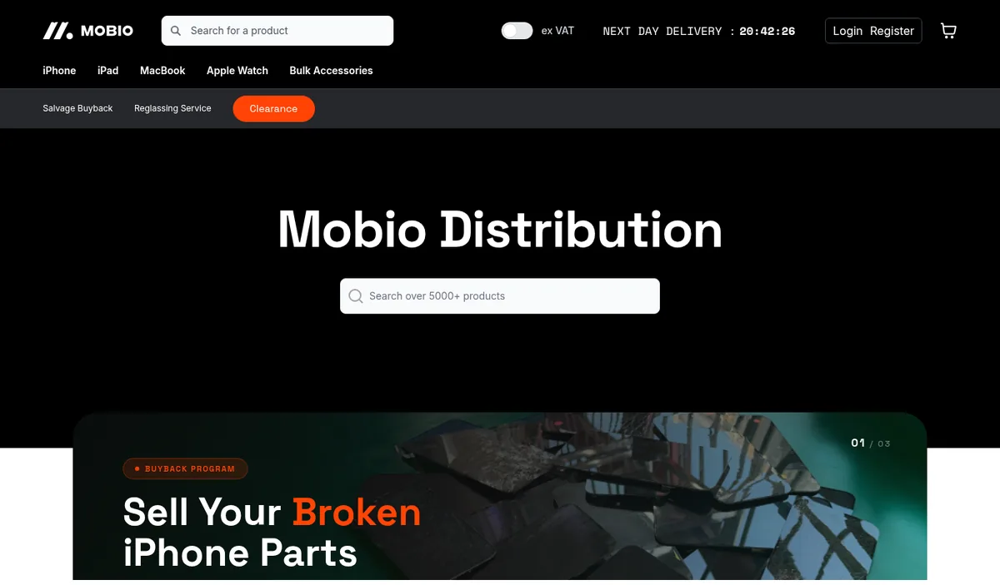

B2B Commerce
E-commerce
Mobio Distribution
A B2B trade store for a UK distributor of smartphone and Apple device parts.
Project detail
Trade catalogue of 5,000+ products with search, registered trade accounts, ex-VAT price switching, a next-day dispatch cut-off, plus salvage buyback, reglassing and clearance sections.
Live: Live B2B storefront with trade accounts and VAT-aware pricing
Visit site →